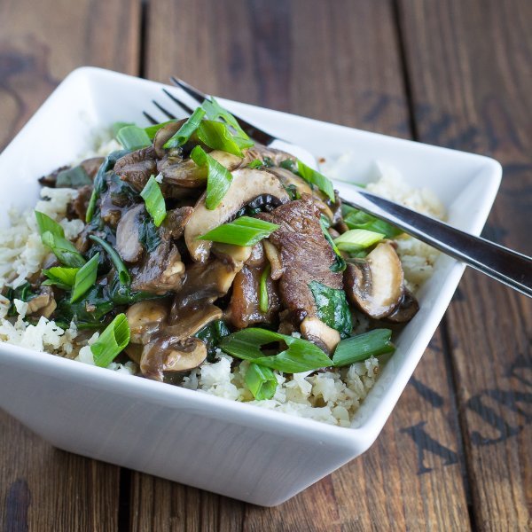

Steak & Mushroom Stir Fry with Cauliflower Rice

Total Time
45 min
Nutrition (Per Serving)
554.1 kcalCalories
48.4 gProtein
27.5 gCarbs
31 gFat
Full nutrition table
| Calories | 554.1 kcal |
| Total fat | 31 g |
| Saturated fat | 16.1 g |
| Trans fat | 1.4 g |
| Cholesterol | 103.8 mg |
| Sodium | 204.9 mg |
| Carbohydrates | 27.5 g |
| Fiber | 8.4 g |
| Sugars | 8.5 g |
| Protein | 48.4 g |
| Potassium | 2228.4 mg |
| Calcium | 182.4 mg |
| Iron | 6.7 mg |
| Vitamin A | 278.1 IU |
| Vitamin C | 157.5 mg |
| Vitamin D | 10.2 IU |
Cookware
Ingredients
- 1 (5 oz) pkgbaby spinach
- 2 medium headscauliflower
- 1 lbcremini mushrooms
- 4 clovesgarlic
- 2 (1 inch) piecesginger root
- 1 small bunchgreen onions (scallions)
- 1 ½ lbstriploin (New York strip) steak
- black pepper
- cornstarch
- rice vinegar
- salt
- soy sauce
- virgin coconut oil
Steps
- Peel and mince or grate ginger. In a medium bowl, prepare marinade by whisking together the minced ginger, water, soy sauce, vinegar, cornstarch, and pepper.2 (1 inch) pieces ginger root
½ cup water
6 tbsp soy sauce
2 tbsp rice vinegar
1 tbsp cornstarch
¼ tsp black pepper - Thinly slice steak and place in marinade; toss to coat and set aside.1 ½ lb striploin (New York strip) steak
- Wash and remove leaves from cauliflower. Using a food processor or grater, grate to rice-like texture.2 medium heads cauliflower
- Heat a skillet over medium-high heat.
- Add oil to skillet and swirl to coat bottom. Add cauliflower and cook, stirring frequently, until warmed through and slightly tender, 5-6 minutes. Season with salt and pepper. Transfer to a bowl and cover with foil to keep warm.1 tbsp virgin coconut oil
½ tsp salt
¼ tsp black pepper - Wash mushrooms and green onions. Thinly slice mushrooms. Trim ends and thinly slice onions on the diagonal. Peel and mince garlic.1 lb cremini mushrooms
1 small bunch green onions (scallions)
4 cloves garlic - Once cauliflower rice has been transferred, add more oil to skillet. Remove steak slices from marinade, reserving the marinade in the bowl, and add to skillet. Cook until browned, 1-2 minutes per side. Transfer to a plate.1 tbsp virgin coconut oil
- Add garlic, mushrooms, ½ of the green onions (save the rest for garnishing), and reserved marinade to skillet. Cook, stirring frequently, until mushrooms are tender and sauce has thickened.
- Wash and dry spinach.1 (5 oz) pkg baby spinach
- Return steak and add spinach to skillet. Stir until spinach is wilted and ingredients are well combined.
- Serve stir fry over cauliflower rice and garnish with remaining green onions. Enjoy!